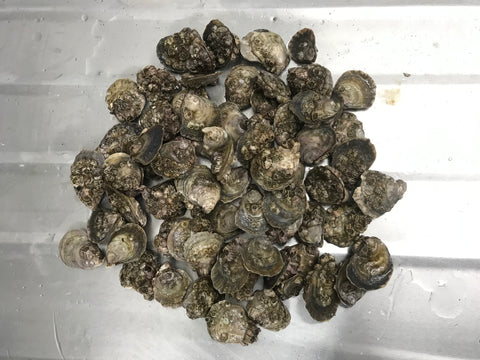
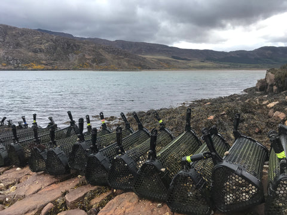

The Importance of Oyster Restoration
Chapter 2 – Biosecurity
May 2021
What is Biosecurity?
Oyster Restoration requires Biosecurity, but what is Biosecurity? Biosecurity is the use of measures to reduce the chance of negative effects upon ecosystems from biological organisms.
Why is this important?
Over the years shellfish movements have been a major vector, or in layman's terms a way, for the introduction of Invasive Non Native Species and various diseases.
Invasive Non Native Species
An example of an Invasive Non Native Species that impacts the Native oyster is the American Slipper limpet (Crepidula fornicata).
The introduction:
The modern British population is known to have been introduced to Essex between 1887 and 1890 in association with oysters, Crassostrea virginica, imported from North America. - MarLIN.ac.uk
The ecological impact:
High densities of Crepidula fornicata may modify the nature and texture of sediments in some bays (e.g. Ehrhold et al., 1998). Where Crepidula fornicata stacks are abundant, few other bivalves can live amongst them. This is due to spatial competition, trophic competition and alteration of the substratum (the pseudofaeces of Crepidula fornicata smother other bivalves and render the substratum unsuitable for larval settlement) (Fretter & Graham, 1981; Blanchard, 1997). In this way, Crepidula fornicata has become a serious pest on oyster beds and has caused many traditional oyster fisheries to be abandoned (e.g. in the Norman Gulf, France) (Blanchard, 1997).
- MarLIN.ac.uk
Disease
An example of a disease impacts the Native oysters is Bonamia (Bonamia ostreae). Bonamia ostreae is a parasitic Rhizaria in the phylum Haplosporidia that can cause lethal infections in shellfish, particularly the European flat oyster, Ostrea edulis.
The introduction:
The parasite is believed to have initially been spread by movements of oysters in the 1970’s in the United States from California to Maine and Washington and to France and Spain in Europe (Elston etal., 1986; Friedman et al., 1989; Friedman and Perkins, 1994; Cigarría and Elston, 1997).
…
It is considered that the spread of B. ostreae has been mainly due to the movements of infected oysters to new on growing areas , or to inadvertent movements of infected oysters with other shellfish. The spread of the parasite has also been attributed to the use of equipment in areas infected with the parasite e.g. to Lake Grevelingen in the Netherlands (Van Banning, 1991).
Other mechanisms, suggested as means of transmission of B. ostreae, include fouling on boat hulls (Howard, 1994).
- BONAMIA OSTREAE IN THE NATIVE OYSTER - OSTREA EDULIS, Sarah C. Culloty & Maire F. Mulcahy, Department of Zoology, Ecology & Plant Science, University College Cork
The ecological impact:
The parasite can cause over 90% mortality among oysters when initially introduced into a naïve population.
- BONAMIA OSTREAE IN THE NATIVE OYSTER - OSTREA EDULIS, Sarah C. Culloty & Maire F. Mulcahy, Department of Zoology, Ecology & Plant Science, University College Cork
Our Position
We have a disease free site and a site that also does not have any of the known Invasive Non Native Species that impact the Native oyster. Within Europe this is extremely rare and so Biosecurity is crucial for us and the restoration projects we support. See the Native Oyster Restoration Alliance (NORA) for details various exciting projects that are being run.
We use a range of policies to enable tight control. These include everything from auditing suppliers, to site access protocols, to cleaning and disinfection, to seashore surveys. It is fair to say that following this path is not easy, but we feel that we have a responsibility to our local environment and its ecosystem to do this. More than that, we also feel this applies to other ecosystems we may have contact with.
A key one of these is regular disease screening. We regularly send small samples to the Scottish Government Marine Laboratory in Aberdeen to ensure our animals are clean and healthy. In this way, we make sure that we reduce the risk, as far as possible, of any disease passing through our farm and onto any restoration project.

The 6K
Following the successful testing on the animals we sent to the Laboratory we took ashore and processed 6000 juvenile Native oysters for Glenmorangie DEEP project in the Dornoch Firth.

They aim to rebuild a Native oyster reef in front of their distillery. As well as restoring an environmental feature, the animals are there to do a job by eating the remaining organic material that is a waste product of the distillery process.
These baby oysters were successfully delivered this week to Heriot Watt University (lead academic partner in the DEEP Project, see the Native Oyster Restoration Alliance site for an overview of DEEP). Here they shall undergo further biosecurity and shall, if the weather is kind, be deployed into the Dornoch Firth next week (Mid May 2021), to start their new lives rebuilding a reef that has been missing for over 100 years.

For us it is really satisfying to be involved in this project. Somehow our business has become entangled in saving the Native oyster, and somehow it just feels right to be more than just an oyster farm business.
In the words of the social media hashtag, it is #morethanbusiness.
What happens next?
We are going to be there to help in the deployment. Sign up to our newsletter and we shall keep you up to date with developments.
And of course, if you fancy a Rock oyster (sorry the season for Natives is closed) in the meantime……….